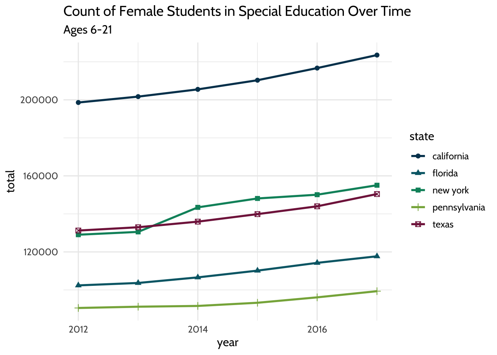
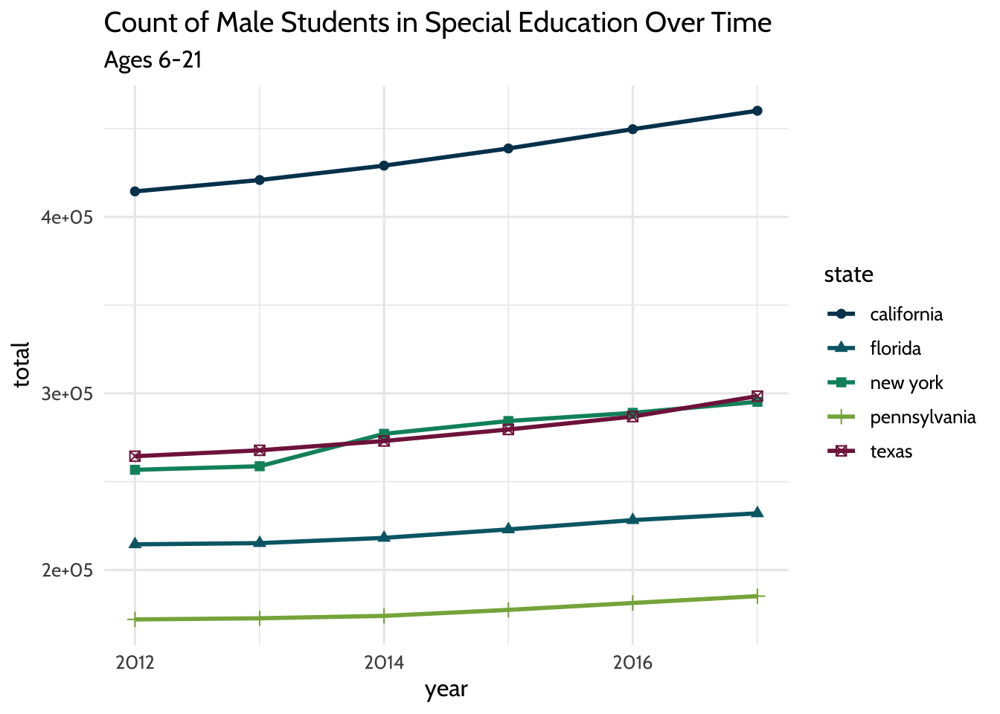
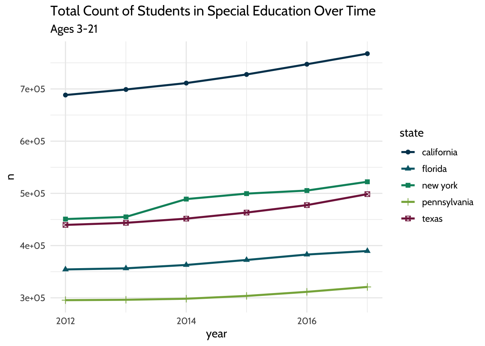
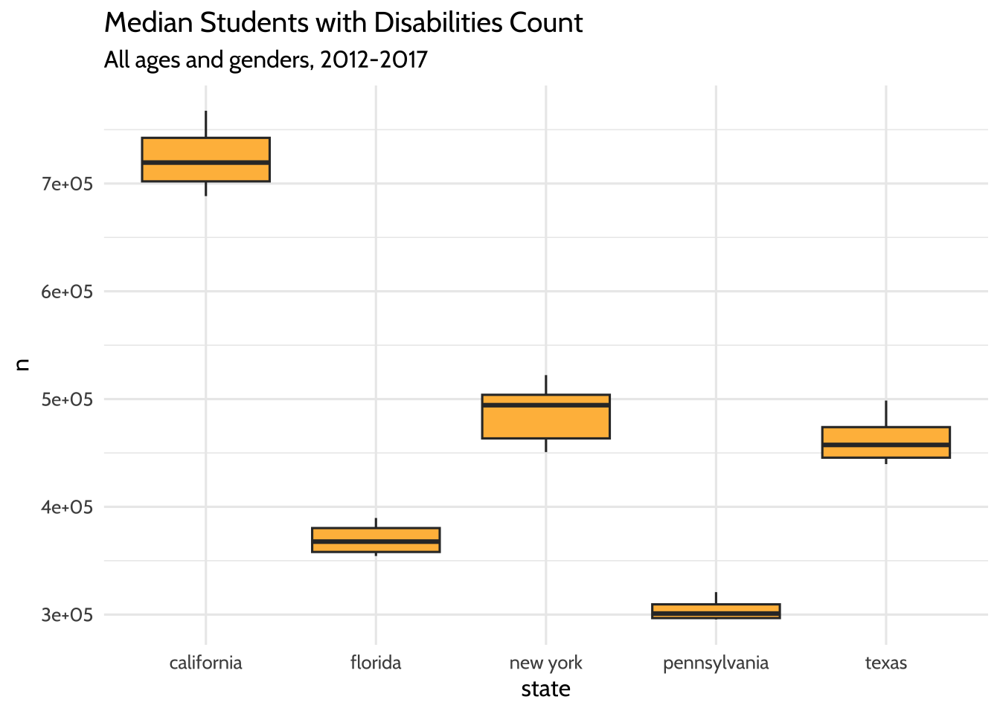
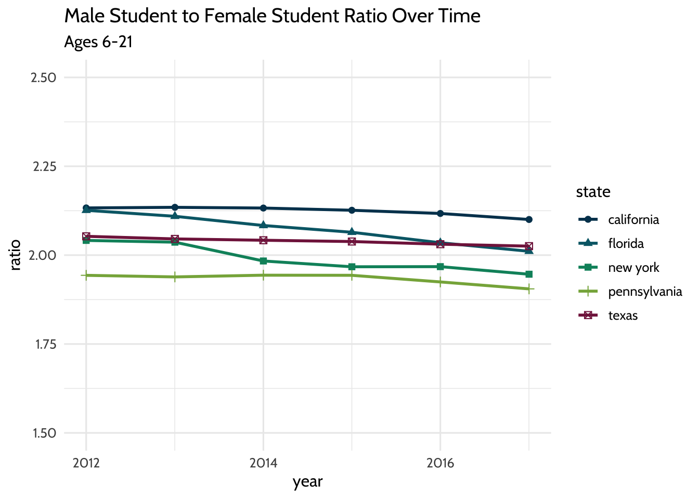
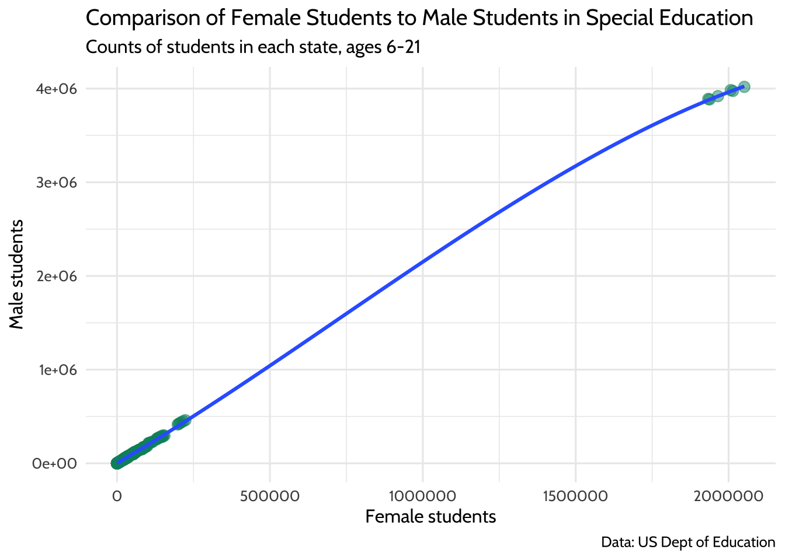
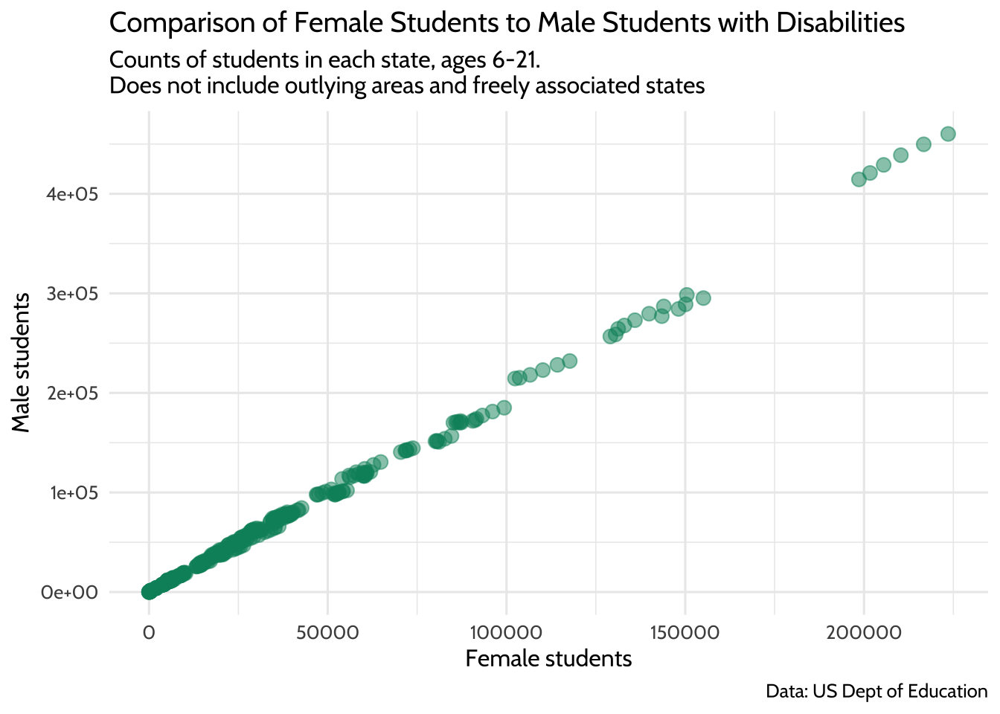
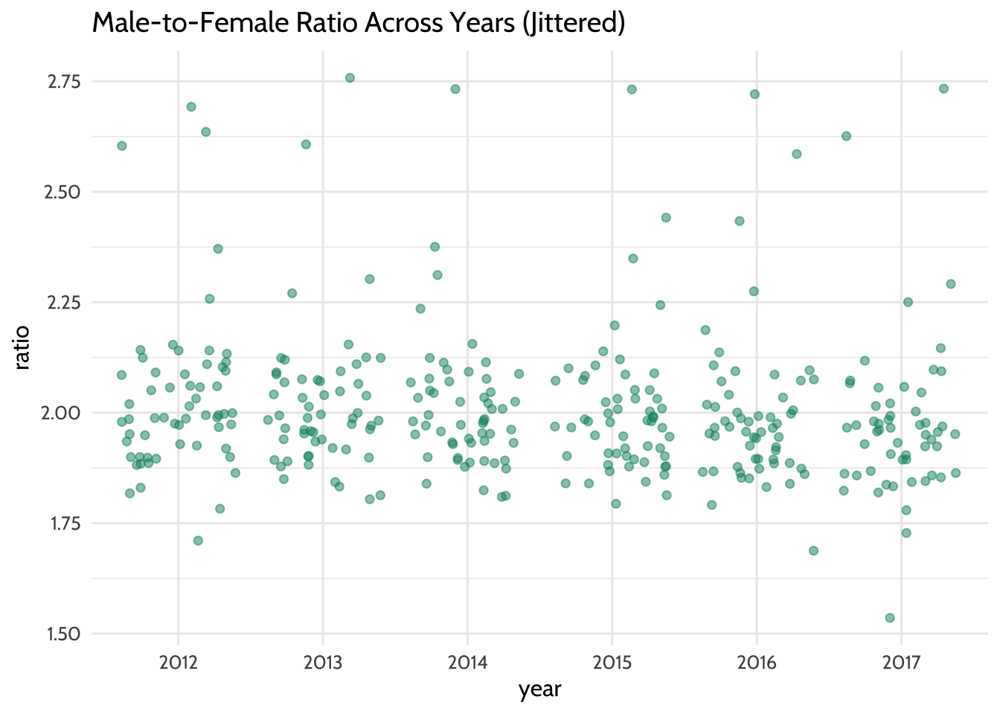
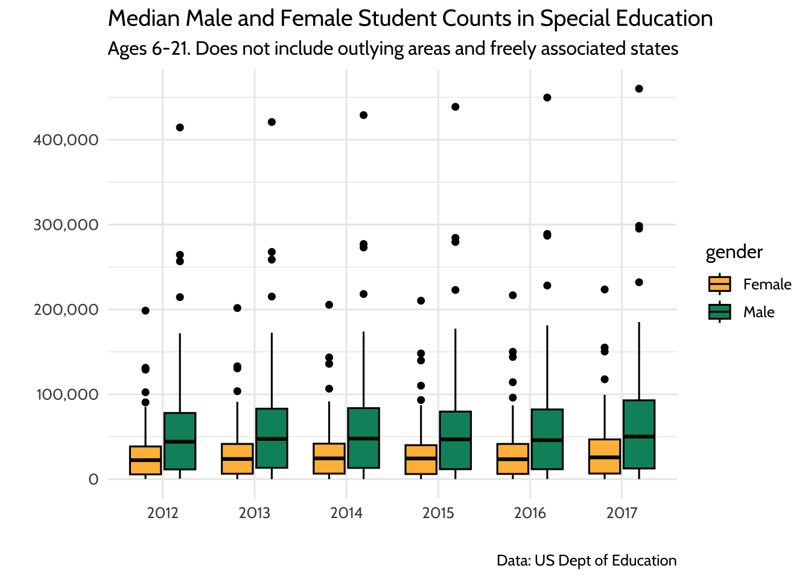

10 Walkthrough 4: Longitudinal analysis with federal data on students with disabilities
Abstract
This chapter explores cleaning, visualizing, and modeling aggregate data. Data scientists in education frequently work with public aggregate data when student-level data is not available. By analyzing aggregate datasets, data scientists in education uncover context for other analyses. Using a freely available federal government dataset that includes students in special education, this chapter compares the gender variable over time in the United States.
Analysis on this scale provides useful context for district-level and school-level analysis. It encourages questions about the experiences of students in special education at the local level by offering a basis for comparison at a national level. Data science tools in this chapter include importing data, preparing data for analysis, visualizing data, and selecting plots for communicating results.
10.1 Topics emphasized
- Importing data
- Tidying data
- Transforming data
- Visualizing data
- Modeling data
- Communicating results
10.2 Functions introduced
list.files()download.file()lubridate::ymd()identical()dplyr::top_n()ggplot2::geom_jitter()dplyr::arrange()
10.3 Vocabulary
- aggregate data
- file path
- list
- read in
- tidy format
- statistical model
- student-level data
- longitudinal analysis
- ratio
- subset
- vector
10.4 Chapter overview
Data scientists working in education don’t always have access to student level data. Knowing how to model publicly available datasets, as in the previous chapter, empowers data scientists to do analysis when individual-level data is not available. This walkthrough builds on the last chapter by focusing on students with disabilities data over time. Note that this kind of analysis goes by a number of names, such as longitudinal analyses, time series analyses, or change-over-time analyses.
A note on the gender variable in this dataset
The dataset in this chapter uses a binary approach to data collection about gender, which does not reflect the experiences of students who do not identify with either of these categories. It’s important that data scientists in education consider data governance to improve how gender data is collected. It’s also important for data scientists to interpret existing binary data with the proper nuance and context. The need for an inclusive approach to documenting gender identity is discussed in a paper by Reachable (2016) of The Williams Institute at UCLA.
10.5 Background
In this chapter, you’ll learn to explore a publicly available dataset and analyze its data over time. Like most public datasets (see the previous chapter), this one contains aggregate data. This means that someone totaled up the student counts so that it doesn’t reveal personally identifiable information.
You can download the datasets for this walkthrough on the United States Department of Education website (see Department of Education (2020))2. They are also available in the {dataedu} package that accompanies this book, described in the “Importing the data from the {dataedu} package” section below.
10.6 Methods
In this walkthrough, you’ll learn how to read multiple datasets in using
the map() function. Next, you’ll prepare the data for analysis by
cleaning the variable names. Finally, you’ll explore the datasets by
visualizing student counts and comparing male-to-female ratios over
time.
10.7 Data sources
In this walkthrough, you’ll be using six separate datasets of child counts, one for each year between 2012 and 2017. If you’re copying and pasting the code in this walkthrough, download the datasets from our GitHub repository for the most reliable results.
You can also access this data through the {dataedu} package; see the “Importing the data From the {dataedu} package” section of this chapter.
Here’s a link to each file; we also include a short URL via the URL-shortener website bit.ly:
2012 data (https://github.com/data-edu/data-science-in-education/raw/master/data/longitudinal_data/bchildcountandedenvironments2012.csv) (https://bit.ly/3dCtVtf)
2013 data (https://github.com/data-edu/data-science-in-education/raw/master/data/longitudinal_data/bchildcountandedenvironments2013.csv) (https://bit.ly/33WXnFX)
2014 data (https://github.com/data-edu/data-science-in-education/raw/master/data/longitudinal_data/bchildcountandedenvironments2014.csv) (https://bit.ly/2UvSwbx)
2015 data (https://github.com/data-edu/data-science-in-education/raw/master/data/longitudinal_data/bchildcountandedenvironments2015.csv) (https://bit.ly/39wQAUg)
2016 data (https://github.com/data-edu/data-science-in-education/raw/master/data/longitudinal_data/bchildcountandedenvironments2016.csv) (https://bit.ly/2JubWHC)
2017 data (https://github.com/data-edu/data-science-in-education/raw/master/data/longitudinal_data/bchildcountandedenvironments2017-18.csv) (https://bit.ly/2wPLu8w)
For reference, we originally downloaded these files from the United States Department of Education website (https://www2.ed.gov/programs/osepidea/618-data/state-level-data-files/index.html)
10.8 Load packages
The function here() from the {here} package can cause conflicts with
other functions called here(). Prevent problems by loading that
package last and including the package name for every call to here(),
like this: here::here(). This is called “including the namespace”.
If you have not installed these packages, do so using the
install.packages() function; see the “Packages” section of
the “Foundational Skills” chapter for instructions.
Load the packages for this walkthrough using this code:
10.9 Import data
Throughout this book’s walkthroughs, you’ll have a chance to import files in different ways. You’ll import different file types. You’ll also learn how to import files using convenient functions like here::here() or using file paths. You’ll now proceed to this walkthrough’s specific import procedure.
In this analysis, you’ll be importing and combining six datasets that
describe the number of students with disabilities in a given year.
First, you’ll review how to get the .csv files you’ll need for the
task. Alternatively, we make these data files available through the
{dataedu} package. You’ll find more about the {dataedu} package below.
Note that if you use this walkthrough on different datasets or store datasets in different locations on your computer, you’ll need to adjust your code accordingly. We suggest only doing this if you have previous experience using R.
10.9.1 A note on file paths
When you download these files, store them in a folder in your working directory. To get to the data in this walkthrough, use this file path in your working directory: “data/longitudinal_data”.
You’ll be using the here() function from the {here} package, which
conveniently fills in the folders in the file path of your working
directory all the way up to the folders you specify in the arguments.
So, when referencing the file path “data/longitudinal_data”, you’ll use
code like this:
You can use a different file path if you like but take note of where your downloaded files are so you can use the correct file path when writing code to import the data.
10.9.2 How to download the files
Note: In “How to download the files,” you will write code to download the required datasets into your directory, and then will assign them to the variable “all_files” as a list. If you prefer to skip downloading the files and instead would like to get them from the {dataedu} package, please skip to the “Loading the data from {dataedu}” section. There you will find instructions for loading the datasets from this book’s GitHub repository.
One way to download the files is manually—saving them to a working
directory. Another way is to read them directly into R, using the
download.file() function using the same file path described in the
previous section. This functionality works for any CSV files that you can
download from webpages; the key is that the URL must point to the CSV
file itself. One way to check this is to ensure the URL ends in .csv.
Here is how to do it for the first dataset, which contains 2012 data:
download.file(
# the url argument takes a URL for a CSV file
url = 'https://raw.githubusercontent.com/data-edu/data-science-in-education/refs/heads/main/data/longitudinal_data/bchildcountandedenvironments2012.csv',
# destfile specifies where the file should be saved
destfile = here::here("data",
"longitudinal_data",
"bchildcountandedenvironments2012.csv"),
mode = "wb")Do this for the remaining five datasets:
download.file(
url = 'https://raw.githubusercontent.com/data-edu/data-science-in-education/refs/heads/main/data/longitudinal_data/bchildcountandedenvironments2013.csv',
destfile = here::here("data",
"longitudinal_data",
"bchildcountandedenvironments2013.csv"),
mode = "wb")
download.file(
url = 'https://raw.githubusercontent.com/data-edu/data-science-in-education/refs/heads/main/data/longitudinal_data/bchildcountandedenvironments2014.csv',
destfile = here::here("data",
"longitudinal_data",
"bchildcountandedenvironments2014.csv"),
mode = "wb")
download.file(
url = 'https://raw.githubusercontent.com/data-edu/data-science-in-education/refs/heads/main/data/longitudinal_data/bchildcountandedenvironments2015.csv',
destfile = here::here("data",
"longitudinal_data",
"bchildcountandedenvironments2015.csv"),
mode = "wb")
download.file(
url = 'https://raw.githubusercontent.com/data-edu/data-science-in-education/refs/heads/main/data/longitudinal_data/bchildcountandedenvironments2016.csv',
destfile = here::here("data",
"longitudinal_data",
"bchildcountandedenvironments2016.csv"),
mode = "wb")
download.file(
url = 'https://raw.githubusercontent.com/data-edu/data-science-in-education/refs/heads/main/data/longitudinal_data/bchildcountandedenvironments2017-18.csv',
destfile = here::here("data",
"longitudinal_data",
"bchildcountandedenvironments2017-18.csv"),
mode = "wb")Now that the files are downloaded, you’re ready to read the data into R. If you were unable to download these files, they are also available through the {dataedu} package, as we describe after the “Reading in Many Datasets” section.
10.9.3 Reading in one dataset
You’ll be learning how to read in more than one dataset using the
map() function. Try it first with one dataset, then try it with
multiple datasets. When you are analyzing multiple datasets that have
the same structure, you can read in each dataset using one code chunk.
This code chunk will store each dataset as an element of a list.
Before doing that, explore one of the datasets to see what you can learn about its structure. Clues from this exploration inform how you read in all the datasets at once later on. For example, you can see that the first dataset has some lines at the top that contain no data:
## # A tibble: 16,234 × 31
## `Extraction Date:` `6/12/2013` ...3 ...4 ...5 ...6 ...7 ...8 ...9
## <chr> <chr> <chr> <chr> <chr> <chr> <chr> <chr> <chr>
## 1 Updated: 2/12/2014 <NA> <NA> <NA> <NA> <NA> <NA> <NA>
## 2 Revised: <NA> <NA> <NA> <NA> <NA> <NA> <NA> <NA>
## 3 <NA> <NA> <NA> <NA> <NA> <NA> <NA> <NA> <NA>
## 4 Year State Name SEA Educa… SEA … Amer… Asia… Blac… Hisp… Nati…
## 5 2012 ALABAMA Correctio… All … - - - - -
## 6 2012 ALABAMA Home All … 1 1 57 12 0
## 7 2012 ALABAMA Homebound… All … - - - - -
## 8 2012 ALABAMA Inside re… All … - - - - -
## 9 2012 ALABAMA Inside re… All … - - - - -
## 10 2012 ALABAMA Inside re… All … - - - - -
## # ℹ 16,224 more rows
## # ℹ 22 more variables: ...10 <chr>, ...11 <chr>, ...12 <chr>, ...13 <chr>,
## # ...14 <chr>, ...15 <chr>, ...16 <chr>, ...17 <chr>, ...18 <chr>,
## # ...19 <chr>, ...20 <chr>, ...21 <chr>, ...22 <chr>, ...23 <chr>,
## # ...24 <chr>, ...25 <chr>, ...26 <chr>, ...27 <chr>, ...28 <chr>,
## # ...29 <chr>, ...30 <chr>, ...31 <chr>The rows containing “Extraction Date:”, “Updated:”, and “Revised:” are not actually rows. They are notes the authors left at the top of the dataset to show when the dataset was changed.
read_csv() uses the first row as the variable names unless told
otherwise, so you need to tell read_csv() to skip those lines using
the skip argument. If you don’t, read_csv() assumes the very first
line—the one that says “Extraction Date:”—is the correct row of
variable names. That’s why calling read_csv() without the skip
argument results in column names like X4. When there’s no obvious
column name to read in, read_csv() names them X[...] and lets you
know in a warning message.
Try using skip = 4 in your call to read_csv():
read_csv(here::here(
"data",
"longitudinal_data",
"bchildcountandedenvironments2012.csv"
),
skip = 4)## # A tibble: 16,230 × 31
## Year `State Name` `SEA Education Environment` SEA Disability Categ…¹
## <chr> <chr> <chr> <chr>
## 1 2012 ALABAMA Correctional Facilities All Disabilities
## 2 2012 ALABAMA Home All Disabilities
## 3 2012 ALABAMA Homebound/Hospital All Disabilities
## 4 2012 ALABAMA Inside regular class 40% through 7… All Disabilities
## 5 2012 ALABAMA Inside regular class 80% or more o… All Disabilities
## 6 2012 ALABAMA Inside regular class less than 40%… All Disabilities
## 7 2012 ALABAMA Other Location Regular Early Child… All Disabilities
## 8 2012 ALABAMA Other Location Regular Early Child… All Disabilities
## 9 2012 ALABAMA Parentally Placed in Private Schoo… All Disabilities
## 10 2012 ALABAMA Residential Facility, Age 3-5 All Disabilities
## # ℹ 16,220 more rows
## # ℹ abbreviated name: ¹`SEA Disability Category`
## # ℹ 27 more variables: `American Indian or Alaska Native Age 3 to 5` <chr>,
## # `Asian Age 3-5` <chr>, `Black or African American Age 3-5` <chr>,
## # `Hispanic/Latino Age 3-5` <chr>,
## # `Native Hawaiian or Other Pacific Islander Age 3-5` <chr>,
## # `Two or More Races Age 3-5` <chr>, `White Age 3-5` <chr>, …The skip argument told read_csv() to make the line containing
“Year”, “State Name”, and so on the first line. The result is a
dataset that has “Year”, “State Name”, and so on as variable names.
10.9.4 Reading in many datasets
Will the read_csv() and skip = 4 combination work on all our
datasets? To find out, use this strategy:
- Store a vector of filenames and paths in a list. These paths point to our datasets
- Pass the list of filenames as arguments to
read_csv()usingpurrr::map(), includingskip = 4, in ourread_csv()call - Examine the new list of datasets to see if the variable names are correct
To understand what purrr::map() does, imagine a widget-making machine
that works by acting on raw materials it receives on a conveyer belt.
This machine executes one set of instructions on each of the raw
materials it receives. You are the operator of the machine, and you
design instructions to get a widget out of the raw materials. Your plan
might look something like this:
- Raw materials: a list of filenames and their paths
- Widget-making machine:
purrr:map() - Widget-making instructions:
read_csv(path, skip = 4) - Expected widgets: a list of datasets
Create the raw materials first. These will be file paths to each of the
CSVs you want to read. Use list.files to make a vector of filename
paths and name that vector filenames. list.files returns a vector of
file names in the folder specified in the path argument. When you set
the full.names argument to TRUE, you get a full path of these
filenames. This will be useful later when you need the file names and
their paths to read the data in.
# Get filenames from the data folder
filenames <-
list.files(path = here::here("data", "longitudinal_data"),
full.names = TRUE)
# A list of filenames and paths
filenamesThat made a vector of six filenames, one for each year of child count
data stored in the data folder. Now pass the raw materials, the vector
called filenames, to the widget-making machine called map() and give
the machine the instructions read_csv(., skip = 4). Name the list of
widgets it cranks out all_files:
# Pass filenames to map and read_csv
all_files <-
filenames %>%
# Apply the function read_csv to each element of filenames
map(., ~ read_csv(., skip = 4))It is important to think ahead here. The goal is to combine the datasets
in all_files into one dataset using bind_rows(). But that will only
work if all the datasets in your list have the same number of columns
and the same column names. Check the column names by using map() and
names():
Use identical() to see if the variables from the two datasets match.
You’ll see that the variable names of the first and second datasets
don’t match, but the variables from the second and third do.
# Variables of first and second dataset don't match
identical(names(all_files[[1]]), names(all_files[[2]]))## [1] FALSE## [1] TRUECheck the number of columns by using map() and ncol():
## [[1]]
## [1] 31
##
## [[2]]
## [1] 50
##
## [[3]]
## [1] 50
##
## [[4]]
## [1] 50
##
## [[5]]
## [1] 50
##
## [[6]]
## [1] 50This is an extremely common problem in education data. Neither the number of columns nor the column names match. With different column names you won’t be able to combine the datasets in a later step.
You’ll see that if you try bind_rows(), which returns a dataset with
100 columns instead of the expected 50.
# combining the datasets at this stage results in the incorrect
# number of columns
bind_rows(all_files) %>%
# check the number of columns
ncol()## [1] 100You’ll correct this in the next section by selecting and renaming the variables, but it’s good to notice this problem early in the process so you know to work on it later.
10.10 Process data
Transforming your dataset before visualizing it and fitting models is critical. It’s easier to write code when variable names are concise and informative. Many functions in R—especially those in the {ggplot2} package—work best when datasets are in a “tidy” format. It’s easier to do an analysis when you have just the variables you need because unused variables can confuse your thought process.
Here are the steps you’ll be taking to process the data:
- Fix the variable names in the 2016 data
- Select variables
- Combine six datasets into one
- Filter for the desired categories
- Rename the variables
- Clean the state names
- Tidy the dataset
- Convert the data types
- Explore and address
NAs
Note: After step 3, “Combine six datasets into one,” you’ll have a dataset stored in an object longitudinal_data. Alternatively, you can skip steps 1-3 and instead start this procedure at the section called “Importing the data from the {dataedu} package.”
In real life, data scientists don’t always know the cleaning steps until they dive into the work. Learning what cleaning steps are needed requires exploration, trial and error, and clarity on the analytic questions you want to answer.
These are just some initial steps for processing data. When you do your own projects, you will find different things to transform. As you do more and more data analysis, your instincts for what to transform will improve.
10.10.1 Fix the variable names in the 2016 data
When you print the 2016 dataset, notice that the variable names are
incorrect. Verify that by looking at the first ten variable names of the
2016 dataset, which is the fifth element of all_files:
## [1] "2016" "Alabama"
## [3] "Correctional Facilities" "All Disabilities"
## [5] "-...5" "-...6"
## [7] "-...7" "-...8"
## [9] "-...9" "-...10"You want the variable names to be Year and State Name, not 2016
and Alabama. But first, go back and review how to get at the 2016
dataset from all_files. You need to identify which element the 2016
dataset was in the list. The order of the list elements was set when you
fed map() the list of file names. If you look at filenames again,
notice that its fifth element is the 2016 dataset. Try looking at the
first and fifth elements of filenames:
Now that you know the 2016 dataset is the fifth element in the list, pluck it out by using double brackets:
## # A tibble: 16,230 × 50
## `2016` Alabama `Correctional Facilities` `All Disabilities` `-...5` `-...6`
## <chr> <chr> <chr> <chr> <chr> <chr>
## 1 2016 Alabama Home All Disabilities 43 30
## 2 2016 Alabama Homebound/Hospital All Disabilities - -
## 3 2016 Alabama Inside regular class 40% t… All Disabilities - -
## 4 2016 Alabama Inside regular class 80% o… All Disabilities - -
## 5 2016 Alabama Inside regular class less … All Disabilities - -
## 6 2016 Alabama Parentally Placed in Priva… All Disabilities - -
## 7 2016 Alabama Residential Facility, Age … All Disabilities 5 3
## 8 2016 Alabama Residential Facility, Age … All Disabilities - -
## 9 2016 Alabama Separate Class All Disabilities 58 58
## 10 2016 Alabama Separate School, Age 3-5 All Disabilities 11 20
## # ℹ 16,220 more rows
## # ℹ 44 more variables: `-...7` <chr>, `-...8` <chr>, `-...9` <chr>,
## # `-...10` <chr>, `-...11` <chr>, `-...12` <chr>, `-...13` <chr>,
## # `-...14` <chr>, `-...15` <chr>, `-...16` <chr>, `-...17` <chr>,
## # `-...18` <chr>, `-...19` <chr>, `0...20` <chr>, `0...21` <chr>,
## # `0...22` <chr>, `0...23` <chr>, `0...24` <chr>, `0...25` <chr>,
## # `0...26` <chr>, `0...27` <chr>, `0...28` <chr>, `1...29` <chr>, …You used skip = 4 when you read in the datasets in the list. That
worked for all datasets except the fifth one. In that one, skipping four
lines left out the variable name row. To fix it, read the 2016 dataset
again using read_csv() and the fifth element of filenames. This
time, use the argument skip = 3. You’ll assign the newly read dataset
to the fifth element of the all_files list:
all_files[[5]] <-
# Skip the first 3 lines instead of the first 4
read_csv(filenames[[5]], skip = 3)Try printing all_files now. You can confirm you fixed the problem by
checking that the variable names are correct.
10.10.2 Select variables
Now that you know the datasets have the correct variable names, simplify them by picking the variables you need. This is a good place to think carefully about which variables to pick. This usually requires trial and error, but here’s a good start:
- The analytic questions are about gender, so pick the gender variable
- Later, you’ll need to filter the dataset by disability category and
program location so you’ll want
SEA Education EnvironmentandSEA Disability Category - You’ll be making comparisons by state and reporting year, so also
pick
State NameandYear
Combining select() and contains() is a convenient way to pick these
variables without writing a lot of code. Knowing that you want variables
that contain the acronym “SEA” and variables that contain “male” in
their names, you can pass those characters to contains():
all_files[[1]] %>%
select(
Year,
contains("State", ignore.case = FALSE),
contains("SEA", ignore.case = FALSE),
contains("male")
) ## # A tibble: 16,230 × 8
## Year `State Name` `SEA Education Environment` SEA Disability Categ…¹
## <chr> <chr> <chr> <chr>
## 1 2012 ALABAMA Correctional Facilities All Disabilities
## 2 2012 ALABAMA Home All Disabilities
## 3 2012 ALABAMA Homebound/Hospital All Disabilities
## 4 2012 ALABAMA Inside regular class 40% through 7… All Disabilities
## 5 2012 ALABAMA Inside regular class 80% or more o… All Disabilities
## 6 2012 ALABAMA Inside regular class less than 40%… All Disabilities
## 7 2012 ALABAMA Other Location Regular Early Child… All Disabilities
## 8 2012 ALABAMA Other Location Regular Early Child… All Disabilities
## 9 2012 ALABAMA Parentally Placed in Private Schoo… All Disabilities
## 10 2012 ALABAMA Residential Facility, Age 3-5 All Disabilities
## # ℹ 16,220 more rows
## # ℹ abbreviated name: ¹`SEA Disability Category`
## # ℹ 4 more variables: `Female Age 3 to 5` <chr>, `Male Age 3 to 5` <chr>,
## # `Female Age 6 to 21` <chr>, `Male Age 6 to 21` <chr>That code chunk verifies that you selected the variables you wanted. Now turn
the code chunk into a function called pick_vars(). Then use map() to
apply pick_vars() to each dataset in the all_files list.
In this function, you’ll use a special version of select() called
select_at(). This conveniently picks variables based on criteria you
give it. The argument
vars(Year, contains("State", ignore.case = FALSE), contains("SEA", ignore.case = FALSE), contains("male"))
tells R you want to keep any column whose name has “State” in upper or
lower case letters, has “SEA” in the title, and has “male” in the title.
This will result in a newly transformed all_files list that contains
six datasets, all with the desired variables.
10.10.3 Combine six datasets into one
Now it’s time to combine the datasets in the list all_files into one.
You’ll use bind_rows(), which combines datasets by adding each one to
the bottom of the one before it. The first step is to check and see if
the datasets have the same number of variables and the same variable
names. When you use names() on our list of newly changed datasets,
you’ll see that each dataset’s variable names are the same:
## [[1]]
## [1] "Year" "State Name"
## [3] "SEA Education Environment" "SEA Disability Category"
## [5] "Female Age 3 to 5" "Male Age 3 to 5"
## [7] "Female Age 6 to 21" "Male Age 6 to 21"
##
## [[2]]
## [1] "Year" "State Name"
## [3] "SEA Education Environment" "SEA Disability Category"
## [5] "Female Age 3 to 5" "Male Age 3 to 5"
## [7] "Female Age 6 to 21" "Male Age 6 to 21"
##
## [[3]]
## [1] "Year" "State Name"
## [3] "SEA Education Environment" "SEA Disability Category"
## [5] "Female Age 3 to 5" "Male Age 3 to 5"
## [7] "Female Age 6 to 21" "Male Age 6 to 21"
##
## [[4]]
## [1] "Year" "State Name"
## [3] "SEA Education Environment" "SEA Disability Category"
## [5] "Female Age 3 to 5" "Male Age 3 to 5"
## [7] "Female Age 6 to 21" "Male Age 6 to 21"
##
## [[5]]
## [1] "Year" "State Name"
## [3] "SEA Education Environment" "SEA Disability Category"
## [5] "Female Age 3 to 5" "Male Age 3 to 5"
## [7] "Female Age 6 to 21" "Male Age 6 to 21"
##
## [[6]]
## [1] "Year" "State Name"
## [3] "SEA Education Environment" "SEA Disability Category"
## [5] "Female Age 3 to 5" "Male Age 3 to 5"
## [7] "Female Age 6 to 21" "Male Age 6 to 21"That means you can combine all six datasets into one using bind_rows().
You’ll call this newly combined dataset child_counts:
Now you know the following:
- Each of the six datasets had eight variables
- The combined dataset also has eight variables
So you can conclude that all the rows have combined together correctly. Just
to be safe, use str() to verify:
## tibble [97,387 × 8] (S3: tbl_df/tbl/data.frame)
## $ Year : chr [1:97387] "2012" "2012" "2012" "2012" ...
## $ State Name : chr [1:97387] "ALABAMA" "ALABAMA" "ALABAMA" "ALABAMA" ...
## $ SEA Education Environment: chr [1:97387] "Correctional Facilities" "Home" "Homebound/Hospital" "Inside regular class 40% through 79% of day" ...
## $ SEA Disability Category : chr [1:97387] "All Disabilities" "All Disabilities" "All Disabilities" "All Disabilities" ...
## $ Female Age 3 to 5 : chr [1:97387] "-" "63" "-" "-" ...
## $ Male Age 3 to 5 : chr [1:97387] "-" "174" "-" "-" ...
## $ Female Age 6 to 21 : chr [1:97387] "4" "-" "104" "1590" ...
## $ Male Age 6 to 21 : chr [1:97387] "121" "-" "130" "3076" ...10.10.4 Importing the data from the {dataedu} package
If you would like to load this processed dataset (child_counts) using
the {dataedu} package, run the following code:
10.10.5 Filter for the desired disabilities and age groups
You want to explore gender-related variables, but the dataset has
additional aggregate data for other student groups. For example, you can
use count() to explore all the different disability groups in the
dataset. Here’s the number of times an SEA Disability Category appears in the
dataset. Note that it is
essential to type the name of this variable using backticks because it includes
spaces—as you can see in the code below:
child_counts %>%
# count number of times the category appears in the dataset
count(`SEA Disability Category`)## # A tibble: 16 × 2
## `SEA Disability Category` n
## <chr> <int>
## 1 All Disabilities 6954
## 2 Autism 6954
## 3 Deaf-blindness 6954
## 4 Developmental delay 4636
## 5 Developmental delay (valid only for children ages 3-9 when defined by … 2318
## 6 Emotional disturbance 6954
## 7 Hearing impairment 6954
## 8 Intellectual disability 6954
## 9 Multiple disabilities 6954
## 10 Orthopedic impairment 6954
## 11 Other health impairment 6954
## 12 Specific learning disability 6954
## 13 Speech or language impairment 6954
## 14 Traumatic brain injury 6954
## 15 Visual impairment 6954
## 16 <NA> 31Since you’ll be visualizing and modeling gender variables for all students in the dataset, you’ll filter out all subgroups except “All Disabilities” and the age totals:
10.10.6 Rename the variables
In the next section, you’ll prepare the dataset for visualization and modeling by “tidying” it. When you write code to transform datasets, you’ll be typing the column names a lot. Do yourself a favor and change the names to more convenient names:
child_counts <-
child_counts %>%
rename(
# change these columns to more convenient names
year = Year,
state = "State Name",
age = "SEA Education Environment",
disability = "SEA Disability Category",
f_3_5 = "Female Age 3 to 5",
m_3_5 = "Male Age 3 to 5",
f_6_21 = "Female Age 6 to 21",
m_6_21 = "Male Age 6 to 21"
)10.10.7 Clean state names
Have you noticed that some state names are in uppercase letters and some are in lowercase letters?
## # A tibble: 6 × 2
## state n
## <chr> <int>
## 1 ALABAMA 4
## 2 ALASKA 4
## 3 AMERICAN SAMOA 4
## 4 ARIZONA 4
## 5 ARKANSAS 4
## 6 Alabama 8If you leave it like this, R will treat state values like “CALIFORNIA”
and “California” as two different states. You can use mutate() and
tolower() to transform all the state names to lowercase letters.
10.10.8 Tidy the dataset
Visualizing and modeling the data will be easier if it’s in a “tidy” format. Tidy Data (Wickham, 2014) defines tidy datasets as possessing the following characteristics:
- Each variable forms a column
- Each observation forms a row
- Each type of observational unit forms a table
The gender variables in this dataset are spread across four columns,
with each representing a combination of gender and age range. Use
pivot_longer() to bring the gender variable into one column. In this
transformation, you’ll create two new columns: a gender column and a
total column. The total column will contain the number of students
in each row’s gender and age category:
child_counts <-
child_counts %>%
pivot_longer(cols = f_3_5:m_6_21,
names_to = "gender",
values_to = "total")To make the values of the gender column more intuitive, use
case_when() to transform the values to either “f” or “m”:
10.10.9 Convert data types
The values in the total column represent the number of students from a
specific year, state, gender, and age group. You know from the chr
under each variable names that R treats these values like characters
instead of numbers. While R does a decent job of deciding this, it’s
much safer to prepare the dataset by changing these character columns to
numeric columns. Use mutate() to change the count columns:
## Warning: There was 1 warning in `mutate()`.
## ℹ In argument: `total = as.numeric(total)`.
## Caused by warning:
## ! NAs introduced by coercion## # A tibble: 2,928 × 6
## year state age disability gender total
## <chr> <chr> <chr> <chr> <chr> <dbl>
## 1 2012 alabama Total, Age 3-5 All Disabilities f 2228
## 2 2012 alabama Total, Age 3-5 All Disabilities m 5116
## 3 2012 alabama Total, Age 3-5 All Disabilities f NA
## 4 2012 alabama Total, Age 3-5 All Disabilities m NA
## 5 2012 alabama Total, Age 6-21 All Disabilities f NA
## 6 2012 alabama Total, Age 6-21 All Disabilities m NA
## 7 2012 alabama Total, Age 6-21 All Disabilities f 23649
## 8 2012 alabama Total, Age 6-21 All Disabilities m 48712
## 9 2012 alaska Total, Age 3-5 All Disabilities f 676
## 10 2012 alaska Total, Age 3-5 All Disabilities m 1440
## # ℹ 2,918 more rowsConverting these count columns from character classes to number classes
results in two changes. First, the chr under these variable names
changed to dbl, short for “double-precision”. This lets you know that
R recognizes these values as numbers with decimal points. Second, the
blank values changed to NA. When R sees a character class value like
"4", it knows to change it to numeric class 4. But there is no
obvious number represented by a value like "" or -, so it changes it
to NA:
## [1] 4## [1] NA## Warning: NAs introduced by coercion## [1] NASimilarly, the variable year needs to be changed from the character
format to the date format. This will make sure R treats this variable
like a point in time when you plot the dataset. The package {lubridate}
has a function called ymd that does this. Use the truncated argument
to let R know you don’t have a month and date to convert.
10.10.10 Explore and address NAs
You’ll notice that some rows in the total column contain an NA. When
you used pivot_longer() to create a gender column, R created unique
rows for every year, state, age, disability, and gender combination.
Since the original dataset had both gender and age range stored in a
column like Female Age 3 to 5, R made rows where the total value is
NA. For example, there is no student count for the age value “Total,
Age 3–5” that also has the gender value for female students who were
age 6–21. You can see that more clearly by sorting the dataset by year,
state, and gender.
In the Foundational Skills chapter, you learned a {dplyr} function
called arrange() to sort the rows of a dataset by the values in a
column. Use arrange() here to sort the dataset by the year, state and
gender columns. When you pass a variable to arrange(), it sorts by the
order of the values in that variable. When you pass it multiple
variables, arrange() sorts by the first variable, then by the second,
and so on. Watch what it does on child_counts when you pass it the
year, state, and gender variables:
## # A tibble: 2,928 × 6
## year state age disability gender total
## <date> <chr> <chr> <chr> <chr> <dbl>
## 1 2012-01-01 alabama Total, Age 3-5 All Disabilities f 2228
## 2 2012-01-01 alabama Total, Age 3-5 All Disabilities f NA
## 3 2012-01-01 alabama Total, Age 6-21 All Disabilities f NA
## 4 2012-01-01 alabama Total, Age 6-21 All Disabilities f 23649
## 5 2012-01-01 alabama Total, Age 3-5 All Disabilities m 5116
## 6 2012-01-01 alabama Total, Age 3-5 All Disabilities m NA
## 7 2012-01-01 alabama Total, Age 6-21 All Disabilities m NA
## 8 2012-01-01 alabama Total, Age 6-21 All Disabilities m 48712
## 9 2012-01-01 alaska Total, Age 3-5 All Disabilities f 676
## 10 2012-01-01 alaska Total, Age 3-5 All Disabilities f NA
## # ℹ 2,918 more rowsYou can simplify the dataset by removing the rows with NA, leaving one
row for each category:
- females age 3–5
- females age 6–21
- males age 3–5
- males age 6–21
Each of these categories will be associated with a state and reporting year:
Verify you have the categories you want by sorting again:
## # A tibble: 1,390 × 6
## year state age disability gender total
## <date> <chr> <chr> <chr> <chr> <dbl>
## 1 2012-01-01 alabama Total, Age 3-5 All Disabilities f 2228
## 2 2012-01-01 alabama Total, Age 6-21 All Disabilities f 23649
## 3 2012-01-01 alabama Total, Age 3-5 All Disabilities m 5116
## 4 2012-01-01 alabama Total, Age 6-21 All Disabilities m 48712
## 5 2012-01-01 alaska Total, Age 3-5 All Disabilities f 676
## 6 2012-01-01 alaska Total, Age 6-21 All Disabilities f 5307
## 7 2012-01-01 alaska Total, Age 3-5 All Disabilities m 1440
## 8 2012-01-01 alaska Total, Age 6-21 All Disabilities m 10536
## 9 2012-01-01 american samoa Total, Age 3-5 All Disabilities f 45
## 10 2012-01-01 american samoa Total, Age 6-21 All Disabilities f 208
## # ℹ 1,380 more rows10.11 Analysis
In the last section, you imported the dataset for analysis. In this section, you’ll ask, “How have child counts changed over time?”
First, you’ll use visualization to explore the number of students in special education over time. In particular, you’ll compare the count of gender categories. Next, you’ll use what you learn from the visualizations to quantify any differences.
10.11.1 Visualize the dataset
Showing a lot of states in a plot will be overwhelming, so start by
making a subset of the dataset. Use a function in the {dplyr} package
called top_n() to learn which states have the highest mean count of
students with disabilities:
child_counts %>%
group_by(state) %>%
summarize(mean_count = mean(total)) %>%
# which six states have the highest mean count of students with disabilities
top_n(6, mean_count)## # A tibble: 6 × 2
## state mean_count
## <chr> <dbl>
## 1 california 180879.
## 2 florida 92447.
## 3 new york 121751.
## 4 pennsylvania 76080.
## 5 texas 115593.
## 6 us, outlying areas, and freely associated states 1671931.These six states have the highest mean count of students in special
education over the six years you are analyzing. For reasons you’ll see
later, exclude outlying areas and freely associated states. That leaves
you with five states: California, Florida, New York, Pennsylvania, and
Texas. You can remove all other states but these by using filter().
Call this new dataset high_count:
high_count <-
child_counts %>%
filter(state %in% c("california", "florida", "new york", "pennsylvania", "texas"))Now, you can use high_count to do some initial exploration. This
analysis compares counts of gender categories in special education, but
visualization is also a great way to explore related curiosities.
You may surprise yourself with what you find when visualizing datasets.
For example, you might discover interesting hypotheses, find better ways
to transform the data or find interesting subsets. Recall the
high mean_count value associated with freely associated states in the state column.
Let your curiosity and intuition drive this part of the analysis. It’s one of the activities that makes data analysis a creative process.
In that spirit, you’ll start by visualizing specific gender categories and age groups. Feel free to try these, but also try other student groups for further exploration.
Start by running this code in your Console to see what it does:
high_count %>%
filter(gender == "f", age == "Total, Age 6-21") %>%
ggplot(aes(x = year, y = total, color = state)) +
geom_line(size = 1) +
geom_point(aes(shape = state), size = 2) +
labs(title = "Count of Female Students in Special Education Over Time",
subtitle = "Ages 6-21") +
scale_color_dataedu() +
theme_dataedu()
Figure 10.1: Count of Female Students in Special Education Over Time
The result is a plot that has the years on the x-axis and a count of female students on the y-axis. Each line takes a different color based on the state it represents.
Let’s look closer: You used filter() to subset the dataset for
students who are female and ages 6 to 21. You used aes to connect
visual elements of our plot to our data. You connected the x-axis to
year, the y-axis to total, and the color of the line to state.
Note here that, instead of storing a new dataset in a new variable, you
filtered the dataset, then used the pipe operator %>% to feed it to
{ggplot2}. While exploring, you don’t need to create a new variable if
you don’t think you’ll need it later.
Now try the same plot but subsetting for male students. Use the same
code from the last plot, but filter for the value “m” in the gender
field:
high_count %>%
filter(gender == "m", age == "Total, Age 6-21") %>%
ggplot(aes(x = year, y = total, color = state)) +
geom_line(size = 1) +
geom_point(aes(shape = state), size = 2) +
labs(title = "Count of Male Students in Special Education Over Time",
subtitle = "Ages 6-21") +
scale_color_dataedu() +
theme_dataedu()
Figure 10.2: Count of Male Students in Special Education Over Time
You’ve looked at each gender separately. What do these lines look like
if you visualized the total number of students each year per state? To
do that, you’ll need to add the gender values together, and both age
group values together. You’ll do this using a common combination of
functions: group_by() and summarize():
high_count %>%
group_by(year, state) %>%
summarize(n = sum(total), .groups = "drop") %>%
ggplot(aes(x = year, y = n, color = state)) +
geom_line(size = 1) +
geom_point(aes(shape = state), size = 2) +
labs(title = "Total Count of Students in Special Education Over Time",
subtitle = "Ages 3-21") +
scale_color_dataedu() +
theme_dataedu()
Figure 10.3: Total Count of Students in Special Education Over Time
So far, you’ve looked at ways to count students over time. In each plot, you saw that while counts have grown overall, each state has different sized populations. Now, you’ll summarize that difference by looking at the median student count for each state over time:
high_count %>%
group_by(year, state) %>%
summarize(n = sum(total)) %>%
ggplot(aes(x = state, y = n)) +
geom_boxplot(fill = dataedu_colors("yellow")) +
labs(title = "Median Students with Disabilities Count",
subtitle = "All ages and genders, 2012-2017") +
theme_dataedu() 
Figure 10.4: Median Students with Disabilities Count
The boxplots show what you might have expected from the line plots before. The highest median student count over time is California and the lowest is Pennsylvania.
What have you learned about the data so far? The five states in the US with the highest total student counts (not including outlying areas and freely associated states) do not have similar counts. The student counts for each state also appear to have grown over time.
But how might you compare the male category count to the female category count? One way is to use a ratio. For example, if Variable A is equal to 14, and Variable B is equal to 7, the ratio between Variable A and Variable B is 2.00, indicating that the first number contains twice the number of the second.
Use the count of male students in each state and divide it by the count of female students. The result is the number of times male students are in special education more or less than female students in the same state and year. The coding strategy will be to:
- Use
pivot_wider()to create separate columns for male and female students. - Use
mutate()to create a new variable calledratio. The values in this column will be the result of dividing the count of male students by the count of female students.
You can also do this comparison by dividing the number of female students by the number of male students. In this case, the result would be the number of times female students are in special education more or less than male students.
high_count %>%
group_by(year, state, gender) %>%
summarize(total = sum(total), .groups = "drop") %>%
pivot_wider(names_from = gender, values_from = total) %>%
mutate(ratio = m / f) %>%
ggplot(aes(x = year, y = ratio, color = state)) +
geom_line(size = 1) +
geom_point(aes(shape = state), size = 2) +
scale_y_continuous(limits = c(1.5, 2.5)) +
labs(title = "Male Student to Female Student Ratio Over Time",
subtitle = "Ages 6-21") +
scale_color_dataedu() +
theme_dataedu()
Figure 10.5: Male Student to Female Student Ratio Over Time
By visually inspecting the plot, you can hypothesize that there was no significant change in the male-to-female ratio between the years 2012 and 2017.
But you may want to better understand the underlying properties of the dataset. You can do this by quantifying the relationship between two variables. In the next section, you’ll explore ways to quantify the relationship between male student counts and female student counts.
10.11.2 Model the dataset
When you visualize your datasets, you are exploring possible relationships between variables. But, sometimes, visualizations can be misleading. In his book Data Visualization: A Practical Introduction, Healy (2019) explains that:
Visualizations encode numbers in lines, shapes, and colors. That means that our interpretation of these encodings is partly conditional on how we perceive geometric shapes and relationships generally.
What are ways to combat these errors of perception while drawing substantive conclusions about the dataset? When you spot a possible relationship between variables—for example, the relationship between female and male counts—you can quantify it by fitting a statistical model.
Practically speaking, this means you are selecting a statistical distribution that represents your dataset reasonably well. This distribution will help you quantify and predict relationships between variables. This important step acts as a check on what you saw in your exploratory visualizations.
In this example, you’ll follow your intuition about the relationship between male and female student counts in the special education dataset. In particular, you’ll test the hypothesis that this ratio has decreased over the years. You’ll do this by fitting a linear regression model that estimates the year as a predictor of the male-to-female ratio.
Note that there are more statistical modeling techniques available to accomplish this. Such approaches, like those involving structural equation models (Grimm et al., 2016) and multi-level models (West et al., 2014), are helpful for analyzing patterns of change over time and their predictors. Both of the references cited above include R code for carrying out such analyses.
10.11.2.1 Do you have enough information for the model?
At the start of this section, you excluded outlying areas and freely associated states. This visualization suggests that there are some states that have a child count so high it leaves a gap in the x-axis values. This can be problematic when you try to interpret our model later. Here’s a plot of the female gender category compared to the male gender category. Note that the relationship appears linear, but there is a gap in the distribution of female student counts between the values of 250,000 and 1,750,000:
child_counts %>%
filter(age == "Total, Age 6-21") %>%
pivot_wider(names_from = gender,
values_from = total) %>%
ggplot(aes(x = f, y = m)) +
geom_point(size = 3, alpha = .5, color = dataedu_colors("green")) +
geom_smooth() +
labs(
title = "Comparison of Female Students to Male Students in Special Education",
subtitle = "Counts of students in each state, ages 6-21",
x = "Female students",
y = "Male students",
caption = "Data: US Dept of Education"
) +
theme_dataedu()
Figure 10.6: Comparison of Female Students to Male Students in Special Education
If you think of each potential point on the linear regression line as a ratio of male-to-female students, you’ll notice that you don’t know a lot about what happens in states where there are between 250,000 and 1,750,000 female students in any given year.
To learn more about what’s happening in our dataset, filter it for only states that have more than 500,000 female students in any year:
child_counts %>%
filter(age == "Total, Age 6-21") %>%
pivot_wider(names_from = gender,
values_from = total) %>%
filter(f > 500000) %>%
select(year, state, age, f, m)## # A tibble: 6 × 5
## year state age f m
## <date> <chr> <chr> <dbl> <dbl>
## 1 2012-01-01 us, outlying areas, and freely associated stat… Tota… 1.93e6 3.89e6
## 2 2013-01-01 us, outlying areas, and freely associated stat… Tota… 1.94e6 3.88e6
## 3 2014-01-01 us, outlying areas, and freely associated stat… Tota… 1.97e6 3.92e6
## 4 2015-01-01 us, outlying areas, and freely associated stat… Tota… 2.01e6 3.98e6
## 5 2016-01-01 us, outlying areas, and freely associated stat… Tota… 2.01e6 3.97e6
## 6 2017-01-01 us, outlying areas, and freely associated stat… Tota… 2.05e6 4.02e6Note that each of the data points in the upper right-hand corner of the plot is from the state value “us, us, outlying areas, and freely associated states”. If you remove these outliers, you have a distribution of female students that looks more complete.
child_counts %>%
filter(age == "Total, Age 6-21") %>%
pivot_wider(names_from = gender,
values_from = total) %>%
# Filter for female student counts less than 500,000
filter(f <= 500000) %>%
ggplot(aes(x = f, y = m)) +
geom_point(size = 3, alpha = .5, color = dataedu_colors("green")) +
labs(
title = "Comparison of Female Students to Male Students with Disabilities",
subtitle = "Counts of students in each state, ages 6-21.\nDoes not include outlying areas and freely associated states",
x = "Female students",
y = "Male students",
caption = "Data: US Dept of Education"
) +
theme_dataedu()
Figure 10.7: Comparison of Female Students to Male Students with Disabilities
Now you can fit a better model for the relationship between male and female student counts, albeit only the ones where the count of female students takes a value between 0 and 500,000.
10.11.2.2 Male-to-female ratio over time
Earlier, you asked the question, “Do we have enough data points for the count of female students to learn about the ratio of female to male students?” Similarly, consider asking, “Do we have enough data points across the year variable to learn about how this ratio has changed over time?”
To answer that, start by making a new dataset that includes any rows
where the f variable has a value that is less than or equal to
500,000. You’ll convert the year variable to a factor data
type—you’ll see how this helps later in the process. You’ll also add a
column called ratio that contains the male-to-female count ratio:
model_data <- child_counts %>%
filter(age == "Total, Age 6-21") %>%
mutate(year = as.factor(year(year))) %>%
pivot_wider(names_from = gender,
values_from = total) %>%
# Exclude outliers
filter(f <= 500000) %>%
# Compute male student to female student ratio
mutate(ratio = m / f) %>%
select(-c(age, disability))You can see how much data you have per year by using count():
## # A tibble: 6 × 2
## year n
## <fct> <int>
## 1 2012 59
## 2 2013 56
## 3 2014 56
## 4 2015 58
## 5 2016 57
## 6 2017 55Visualize the ratio values across all years as an additional check. Note
the use of geom_jitter() to spread the points horizontally so you can
estimate the quantities better:
ggplot(data = model_data, aes(x = year, y = ratio)) +
geom_jitter(alpha = .5, color = dataedu_colors("green")) +
labs(title = "Male-to-Female Ratio Across Years (Jittered)") +
theme_dataedu()
Figure 10.8: Male to Female Ratio Across Years (Jittered)
Each year seems to have data points that can be included in the model. This means that there are enough data points to learn how the year variable predicts the ratio variable.
Fit the linear regression model by passing the argument ratio ~ year
to the function lm(). In R, the ~ usually indicates a formula. In
this case, the formula is the variable year as a predictor of the
variable ratio. The final argument to pass to lm is
data = model_data, which tells R to look for the variables ratio and
year in the dataset model_data. The results of the model are called
a “model object”. You’ll store the model object in ratio_year:
Each model object is filled with model information. You can look at this
information using the function summary():
##
## Call:
## lm(formula = ratio ~ year, data = model_data)
##
## Residuals:
## Min 1Q Median 3Q Max
## -0.4402 -0.1014 -0.0281 0.0534 0.7574
##
## Coefficients:
## Estimate Std. Error t value Pr(>|t|)
## (Intercept) 2.0336 0.0220 92.42 <2e-16 ***
## year2013 -0.0120 0.0315 -0.38 0.70
## year2014 -0.0237 0.0315 -0.75 0.45
## year2015 -0.0310 0.0313 -0.99 0.32
## year2016 -0.0396 0.0314 -1.26 0.21
## year2017 -0.0576 0.0317 -1.82 0.07 .
## ---
## Signif. codes: 0 '***' 0.001 '**' 0.01 '*' 0.05 '.' 0.1 ' ' 1
##
## Residual standard error: 0.169 on 335 degrees of freedom
## Multiple R-squared: 0.0122, Adjusted R-squared: -0.00259
## F-statistic: 0.824 on 5 and 335 DF, p-value: 0.533Here’s how to interpret the Estimate column: The estimate of the
(Intercept) is 2.03, which is the estimated value of the ratio
variable when the year variable is “2012”.
Note that the value year2012 isn’t present in the list of rownames.
That’s because the (Intercept) row represents year2012. In linear
regression models that use factor variables as predictors, the first
level of the factor is the intercept. Sometimes this level is called a
“dummy variable”.
The remaining rows of the model output show how much each year differs
from the intercept, 2012. For example, year2013 has an estimate of
0.012. This suggests that on average the value of ratio is 0.012 less
than 2.03. Similarly, on average, the ratio of year2014 is 0.02 less
than 2.03.
The t value column is the size of the difference between the estimated
value of the ratio for each year and the estimated value of the ratio of
the intercept. Generally speaking, the larger the t value, the larger
the chance that any difference between the coefficient of a factor level
and the intercept is significant.
Though the relationship between year as a predictor of ratio is not
linear (recall our previous plot), the linear regression model still
gives useful information. You fit a linear regression model to a factor
variable, like year, as a predictor of a continuous variable,
likeratio. In doing so, you computed the average ratio at every
value of year.
Verify this by taking the mean ratio of every year:
## # A tibble: 6 × 2
## year mean_ratio
## <fct> <dbl>
## 1 2012 2.03
## 2 2013 2.02
## 3 2014 2.01
## 4 2015 2.00
## 5 2016 1.99
## 6 2017 1.98This verifies that the intercept, the value of ratio during the year
2012, is 2.03 and the value of ratio for 2013 is 0.012 less than that
of 2012 on average.
Fitting the model gives more details about these mean ratio
scores—namely the coefficient, t value, and p value. These values help
you apply judgment when deciding if differences in ratio values
suggest an underlying difference between years or simply differences you
can expect from randomness.
In this case, the absence of “*” in all rows except the Intercept row suggests that any differences occurring between years are within the range you’d expect by chance.
You can use summary() on the model_data dataset to verify the
intercept again:
## year state f m ratio
## 2012:59 Length:59 Min. : 208 Min. : 443 Min. :1.71
## 2013: 0 Class :character 1st Qu.: 5606 1st Qu.: 11467 1st Qu.:1.93
## 2014: 0 Mode :character Median : 22350 Median : 44110 Median :1.99
## 2015: 0 Mean : 32773 Mean : 65934 Mean :2.03
## 2016: 0 3rd Qu.: 38552 3rd Qu.: 77950 3rd Qu.:2.09
## 2017: 0 Max. :198595 Max. :414466 Max. :2.69The mean value of the ratio column when the year column is equivalent to 2012
is 2.03, just like the model output’s intercept row suggests.
Lastly, how would you communicate to a more general audience that there were roughly twice the number of male students in this dataset than there were female students, and this did not change significantly between the years 2012 and 2017?
When you are not communicating to an audience of other data scientists, it’s helpful to illustrate your point without the technical details of the model output. Think of yourself as an interpreter: since you can speak the language of model outputs and the language of data visualization, your challenge is to take what you learned from the model and tell that story in a way that is meaningful to your non-data scientist audience.
Start by choosing box plots to show the audience that there were roughly twice as many male students in special education as female students between 2012 and 2017. You can verify this by looking at the median male to female ratio for each year:
## # A tibble: 6 × 2
## year median_ratio
## <fct> <dbl>
## 1 2012 1.99
## 2 2013 1.99
## 3 2014 1.98
## 4 2015 1.98
## 5 2016 1.97
## 6 2017 1.96Now visualize this with box plots:
model_data %>%
pivot_longer(cols = c(f, m),
names_to = "gender",
values_to = "students") %>%
ggplot(aes(x = year, y = students)) +
geom_boxplot(aes(fill = gender),
color = "black") +
scale_y_continuous(labels = scales::comma) +
labs(
title = "Median Male and Female Student Counts in Special Education",
subtitle = "Ages 6-21. Does not include outlying areas and freely associated states",
x = "",
y = "",
caption = "Data: US Dept of Education"
) +
scale_fill_manual(
values = c("f" = "#ffbc49", "m" = "#00906b"),
labels = c("f" = "Female", "m" = "Male")
) +
theme_dataedu()
Figure 10.9: Median Male and Female Student Counts in Special Education
When discussing the plot, it helps to have your model output in your notes so you can reference specific coefficient estimates when needed.
10.12 Results
You learned that each state has a different count of students with disabilities—so different that you need to use statistics like ratios or visualizations to compare across states.
When you look at the five states with the highest count of students with disabilities over time, you see that all five increased their student counts. You also learned that, though the male-to-female ratios for students with disabilities appear to have gone down slightly over time, the model suggests that these decreases do not represent a big difference.
Still, the comparison of student groups across each state is tricky because there is variation in total enrollment across all 50 states.
Were you to continue this analysis, your next step could be to combine your students with disabilities count data with total enrollment data. This would allow you to compare counts of students with disabilities as a percentage of total enrollment.
10.13 Conclusion
Education data science is about using data science tools to learn about and improve the lives of our students. So why choose a publicly available aggregate dataset instead of a student-level dataset?
For this walkthrough, we chose to use an aggregate dataset because it reflects an analysis that a data scientist in education would typically do.
Using student-level data requires that the data scientist be either an employee of the school agency or someone who works under a memorandum of understanding (MOU) that allows them to access this data. Without either of these conditions, the education data scientist learns about the student experience by working on publicly available datasets, almost all of which are aggregated student-level datasets.
10.13.1 Student-level data for analysis of local populations: aggregate data for base rate and context
Longitudinal analysis is typically done with student-level data because educators are interested in what happens to students over time. So if you cannot access student-level data, how do you use aggregate data as part of the analysis?
Aggregate data is valuable because it helps you learn from populations that are larger or different from the local student-level population.
In the book Thinking Fast and Slow, Kahneman (2011) discusses the importance of learning from larger populations, a context he refers to as the “base rate”. The base rate fallacy is the tendency to focus only on conclusions we can draw from immediately available information.
It’s the difference between computing how often a student at one school is identified for special education services (student-level data) and how often students are identified for special education services nationally (base rate data). You can use aggregate data to combat the base rate fallacy by putting what you learn from local student data in the context of surrounding populations.
For example, consider an analysis of student-level data in a school district over time. Student-level data allows you to ask questions about a local population. One such question is, “Are the rates of special education identification for male students different from other gender identities in our district?” This style of question looks inward at your own educational system.
Taking a cue from Kahneman, you should also ask what this pattern looks like in other states or in the country. Aggregate data allows you to ask questions about a larger population. One such question is, “Are the rates of special education identification for male students different from other gender identities in the United States?” This style of question looks for answers outside your own educational system. The combination of the two lines of inquiry is a powerful way to generate new knowledge about the student experience.
So, educational data scientists should not despair in situations where they cannot access student-level data. Aggregate data is a powerful way to learn from state-level or national-level data when a data sharing agreement for student-level data is not possible. In situations where student-level data is available, including aggregate data is an excellent way to combat the base rate fallacy.
The documentation for the dataset is available here: https://www2.ed.gov/programs/osepidea/618-data/collection-documentation/data-documentation-files/part-b/child-count-and-educational-environment/idea-partb-childcountandedenvironment-2017-18.pdf↩︎